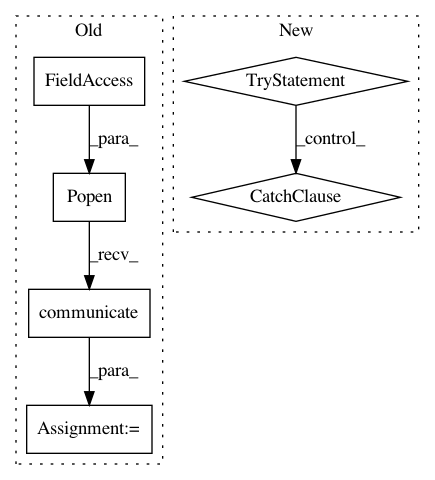

580a99bfb656a6f6b99133c9986252e619713fe1,studio/model.py,FirebaseProvider,_get_experiment_logtail,#FirebaseProvider#Any#,423
Before Change
logpath = self.store.get_artifact(experiment.artifacts["output"])
if os.path.exists(logpath):
tailp = subprocess.Popen(
["tail", "-50", logpath], stdout=subprocess.PIPE)
stdoutdata = tailp.communicate()[0]
logtail = util.remove_backspaces(stdoutdata).split("\n")
return logtail
else:
After Change
return info
def _get_experiment_logtail(self, experiment):
try:
tarf = self.store.stream_artifact(experiment.artifacts["output"])
logdata = tarf.extractfile(tarf.members[0]).read()
logdata = util.remove_backspaces(logdata).split("\n")
return logdata
except BaseException as e:
self.logger.exception(e)
return None
def get_experiment(self, key, getinfo=True):
data = self.__getitem__(self._get_experiments_keybase() + key)
assert data, "data at path %s not found! " % (
self._get_experiments_keybase() + key)
In pattern: SUPERPATTERN
Frequency: 3
Non-data size: 6
Instances
Project Name: studioml/studio
Commit Name: 580a99bfb656a6f6b99133c9986252e619713fe1
Time: 2017-08-15
Author: peter.zhokhov@Peters-MBP.geneticfinance.com
File Name: studio/model.py
Class Name: FirebaseProvider
Method Name: _get_experiment_logtail
Project Name: vatlab/SoS
Commit Name: bc823da8c38eae03a311d0ba0627b23b84939b56
Time: 2017-07-30
Author: ben.bog@gmail.com
File Name: src/sos/actions.py
Class Name: SoS_ExecuteScript
Method Name: run
Project Name: kkroening/ffmpeg-python
Commit Name: de124673e0f54ed593884de78e5435b6c1119d9b
Time: 2018-06-02
Author: karlk@kralnet.us
File Name: examples/transcribe.py
Class Name:
Method Name: decode_audio